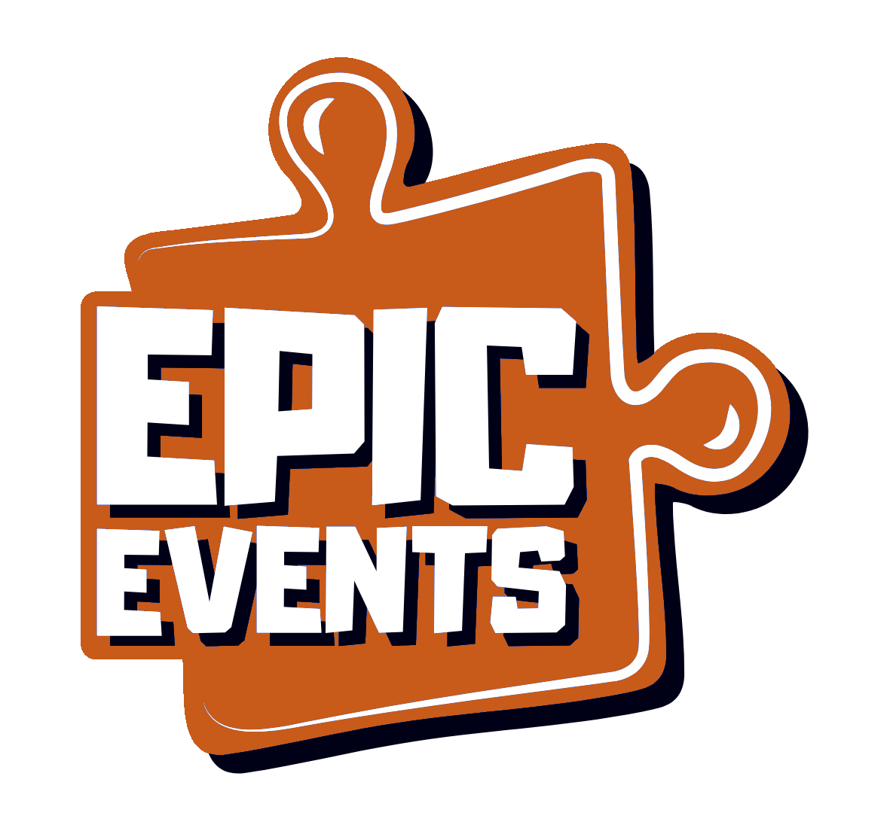
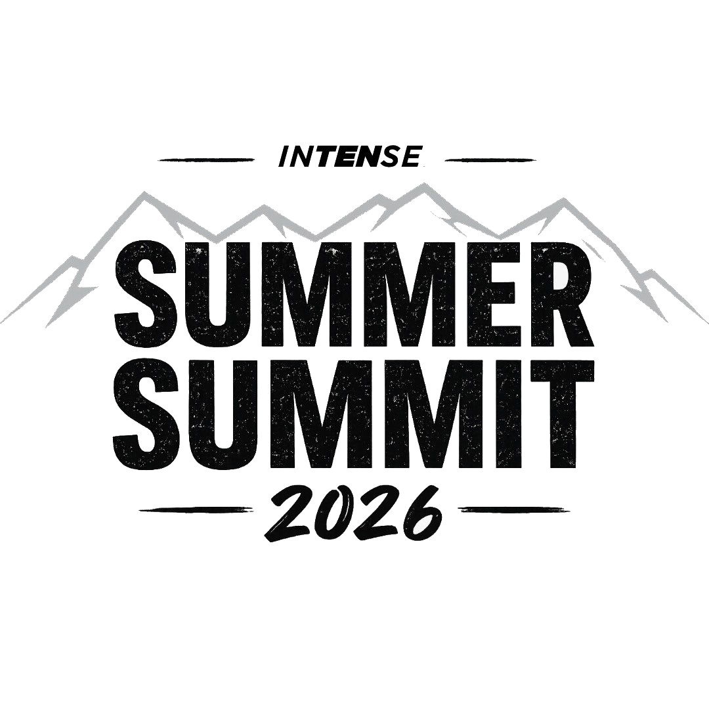

Kit Animateur — The Lost Office · Tignes 2026. Export PDF : Ctrl + P → « Enregistrer en PDF » → Marges « Aucune » → A4.

EPIC EVENTS × INTENSE MARKETINGTignes · 2026

Kit Animateur · Dossier de mission
The Lost Office
Guide complet de l'animateur — Journée d'expédition
Jeu de piste · Stations · Jeux d'animation
Tignes · 2026
Contact : 07 62 54 67 34
Sommaire & Briefing
À lire avant le début de la journée
- 1 Briefing & histoire p. 2
- 2 Format & kit p. 3
- 3 Déroulé de la journée p. 4
- 4 Vue d'ensemble — 8 stations p. 5
- 5 Fiches stations 1–8 p. 6–13
- 6 Missions autonome & bonus p. 14
- 7 Après-midi — Jeux d'animation p. 15
- 8 Annexes p. 16
L'histoire
Un architecte a voulu monter un nouveau bureau… et a échoué. Il a disparu en laissant derrière lui un dossier incomplet. La mission des équipes : remonter sa piste et comprendre ce qui a coincé.
Le matin, les équipes partent en jeu de piste. Chaque station révèle une pièce du dossier de l'architecte — standards, résolution de problèmes, qualité, recrutement, délégation, coaching…
L'après-midi, les équipes s'affrontent dans des jeux d'animation liés au scénario, pour mettre en pratique ce qu'elles ont découvert.
Format de l'événement
L'essentiel en un coup d'œil
- Type
- Jeu de piste / randonnée avec stations (matin) · Ateliers liés au scénario (après-midi)
- Lieu
- Tignes
- Durée
- 10h00 – 18h00
- Participants
- 44 personnes
- Équipes
- 9 équipes de 4 personnes
- Animateurs
- 2 Epic Events + 5/6 Intense Marketing
- Objectif
- Découvrir les 8 leçons du plan perdu le matin · mettre en pratique l'après-midi
Kit — à vérifier avant de partir avec les joueurs
- Feuilles de route / carnets d'équipe
- Stylos & crayons
- Cartes des stations / plan du parcours
- Téléphone chargé
- Eau (par équipe)
- Crème solaire
- Eau
- Contact d'urgence affiché
- Cri de guerre
- Peinture de guerre
À vérifier la veille — charge des appareils, test de chaque station, vérification du parcours.
Déroulé de la journée
Tignes · 10h00 – 18h00
Matin — Jeu de piste
9h55 ·
Départ des animateursLes animateurs rejoignent leurs stands.
10h00 ·
Accueil & briefing généralPrésentation de la journée et du scénario « The Lost Office ».
10h05 ·
Constitution des équipesFormation des 9 équipes, distribution des foulards et équipements.
10h30 ·
Départ du 1er groupe3-5 minutes d'intervalle entre chaque départ d'équipe.
11h00 ·
Départ du dernier groupe
13h00 ·
Arrivée du 1er groupeLes groupes arrivés vont chercher à manger pour tout le groupe.
13h30 ·
Arrivée du dernier groupe
Après-midi — Jeux d'animation
14h30 ·
Brief après-midi + reconstruction des équipes
18h00 ·
Fin de la journée
Les 8 stations
Jeu de piste · parcours Tignes
1Pressure is a Privilege
Sales · Tarp Challenge
2Problem Solver
Sales · Kapla Bridge
3Demand Standards
Quality · Blueprint Build
4Accountability
Quality · Symbol Hunt
5A Players
Recruitment · Logic + A Player Cards
6Sizzle / Spark
Recruitment · Future Pitch
7Patience
Coaching · Silent Maze
8Coachability
Coaching · Feedback Delta
1
Pressure is a Privilege Sales
Tarp Challenge · « Pressure is a privilege. Stay calm. Move forward. »
Contexte — The Lost Office
Dans les notes de l'architecte : la même page de décisions, recopiée semaine après semaine avec les dates décalées. Les enjeux étaient clairs. Le projet avançait. Personne ne tranchait.
But du jeu
Coordonner l'équipe pour marquer dans au moins 2 trous différents — pas question de jouer la sécurité en répétant le même trou. Puis oser la balle de pression finale pour décrocher le bonus.
Mécanique
- L'équipe tient ensemble une grande bâche perforée. La bâche comporte des trous scorants (proche · milieu · difficile) et des trous pièges. Objectif : marquer dans au moins 2 trous différents en coordonnant les mouvements. Tentatives libres pendant le temps imparti — remise à zéro après chaque balle.
- Marquer deux fois dans le même trou ne compte que pour un seul trou — il faut varier pour valider la condition.
- Balle de pression (dernière balle) : l'équipe choisit librement de la jouer ou non. La décision appartient à l'équipe — c'est elle qui assume.
✓ Victoire
L'équipe marque dans au moins 2 trous différents. Preuve : scorecard animateur avec les trous cochés.
1 tampon · 5 pts★ Bonus — Balle risquée
L'équipe choisit de jouer la balle de pression finale (quel que soit le résultat du tir).
+1 tampon · +5 pts✗ Échec
L'équipe ne marque que dans un seul type de trou — ou ne marque pas du tout.
0 tampon
Solution animateur — Annoncer la règle de la balle de pression avant le début. Tenir le scorecard en temps réel. Pour la balle finale, laisser l'équipe décider sans influencer — la tension du choix fait partie du jeu.
2
Problem Solver Sales
Kapla Bridge · « Don't announce problems. Solve them. »
Contexte — The Lost Office
Dans le dossier de l'architecte : une liste de matériaux barrée, une note en marge — « en attente de livraison ». La livraison n'est jamais venue. Le projet non plus.
But du jeu
Construire un pont suffisamment solide pour qu'une voiture jouet puisse le traverser — avec moins de pièces que prévu dans l'inventaire.
Mécanique
- L'équipe reçoit un kit de construction : inventaire annoncé — 16 pièces Kapla (morceaux de bois), 2 supports, 1 plaque route, 1 voiture jouet. Le kit réel contient moins de pièces qu'annoncé.
- L'équipe ne peut pas demander de pièces supplémentaires. Elle doit repenser le pont avec ce qu'elle a.
✓ Victoire
La voiture traverse le pont et le pont tient 10 secondes. Preuve : vidéo de la traversée.
1 tampon · 5 pts★ Bonus — Adaptation expliquée
En plus de la traversée, l'équipe explique verbalement comment elle a revu sa construction face aux pièces manquantes.
+1 tampon · +5 pts✗ Échec
Le pont s'effondre ou la voiture ne traverse pas.
0 tampon
Solution animateur — Filmer la traversée pour preuve.
3
Demand Standards Quality
Blueprint Build · « Fast is good. Correct is required. »
Contexte — The Lost Office
Dans les dossiers de l'architecte : un rapport technique tamponné « REFUSÉ ». Les exigences étaient listées, page après page. Les premières cases : cochées. Les dernières : vierges.
But du jeu
Construire la structure décrite dans les instructions — en respectant toutes les exigences, y compris les contraintes cachées glissées dans les détails ou en fin de page.
Mécanique
- L'équipe reçoit les instructions de construction et le matériel. Les instructions contiennent des exigences critiques cachées faciles à rater si on se précipite. Exemples : « Avant de commencer, inversez les étapes 3 et 4 » · « Seules les pièces bleues peuvent toucher le sol » · contrainte révélée uniquement au moment de la validation.
- Les équipes construisent sans aide extérieure. Aucun animateur sur place pendant la construction.
- À la fin, l'animateur (ou la grille de validation laminée) vérifie si toutes les normes ont été respectées — y compris celles que l'équipe pensait secondaires.
✓ Victoire
La structure respecte toutes les exigences, y compris les contraintes cachées. Preuve : photo + grille complète.
1 tampon · 5 pts★ Bonus — Rigueur proactive
L'équipe a identifié et verbalisé les contraintes cachées par elle-même, avant ou pendant la construction, sans aide.
+1 tampon · +5 pts✗ Échec
Au moins une exigence cachée non respectée — même si la structure est solide ou belle.
0 tampon
Solution animateur — Pas d'animateur.
4
Accountability Quality
Symbol Hunt · « Own the result. Tell the truth. Fix it fast. »
Contexte — The Lost Office
Dans les comptes rendus de l'architecte : deux colonnes — objectifs déclarés / résultats réels. Des cases « atteint » cochées des semaines à l'avance. La colonne résultats réels, jamais remplie. Le projet s'est arrêté quand l'écart est devenu impossible à ignorer.
But du jeu
Trouver le maximum de symboles cachés dans la zone, puis déclarer honnêtement son score — même si ce n'est pas le score espéré.
Mécanique
- L'équipe reçoit une carte de la zone et la consigne : « Trouvez les 10 symboles cachés. » En réalité, seuls 8 symboles sont cachés. L'équipe ne le sait pas.
- Après la recherche, chaque équipe déclare son score à l'animateur : combien de symboles avez-vous trouvés ?
- Barème : 8 déclarés = 10 pts (honnêteté récompensée) · Moins de 8 = score partiel proportionnel · 9 ou 10 déclarés = 0 pt (overclaim détecté, pas de tampon).
✓ Honnête · 8 symboles
L'équipe déclare exactement 8 symboles. Preuve : liste des zones trouvées.
2 tampons · 10 pts◐ Honnête · moins de 8
L'équipe déclare honnêtement un score inférieur à 8 symboles.
1 tampon · 5 pts✗ Mensonge (9 ou 10)
L'équipe surestiment son résultat. Surestimer est pire qu'un score incomplet.
0 tampon
Solution animateur — Ne pas révéler qu'il n'y a que 8 symboles avant la déclaration. Après la déclaration, annoncer le résultat réel et expliquer le barème. La leçon se révèle au moment de la comparaison — c'est là que tout s'éclaire.
5
A Players Recruitment
Logic + A Player Cards · « A Players attract A Players. »
Contexte — The Lost Office
Dans les archives de l'architecte : des profils recrutés avec de belles références, des notes enthousiastes. La colonne résultats — vide pour chacun. L'équipe était en place. Le bureau ne fonctionnait toujours pas.
Mécanique — 2 parties
Partie 1 — Jeu de déduction CV
- L'équipe reçoit des fiches candidats. Certains sont des concurrents (à éliminer), d'autres sont honnêtes. Chaque candidat porte une carte-indice — les menteurs ont des cartes fausses, les honnêtes des cartes vraies.
- Par déduction logique, l'équipe identifie les concurrents en croisant les indices. Ne pas se fier aux apparences — lire chaque carte.
Partie 2 — Qualités A Player
- L'équipe tire 5 cartes d'un deck de 20–30. Chaque carte porte une qualité ou un comportement (ex. « fiabilité », « capacité d'apprentissage », « initiative »).
- Discussion : quels 5 critères définissent vraiment un A Player ici ? L'équipe présente brièvement sa sélection finale.
✓ CV — Partie 1
Les concurrents sont correctement identifiés par déduction logique.
1 tampon · 5 pts★ Qualités — Partie 2
5 qualités A Player choisies et présentées avec conviction à l'animateur.
1 tampon · 5 pts✗ Échec
Mauvaise identification en Partie 1, ou moins de 5 qualités présentées.
0 tampon
Solution animateur — Avoir la solution de la Partie 1 prête pour valider rapidement. Pour la Partie 2, ne pas juger la sélection — écouter et poser 1 ou 2 questions pour approfondir. La richesse de la discussion compte autant que les cartes choisies.
6
Sizzle / Spark Recruitment
Final Client Pitch · « Don't explain the job. Sell the future. »
Contexte — The Lost Office
Dans les archives de l'architecte : des fiches de poste détaillées — missions, conditions, salaire. Rien ne manquait sur le papier. Zéro candidature reçue. Les postes sont restés ouverts des mois.
But du jeu
Pitcher « l'avenir du Nouveau Bureau » en 60–90 secondes devant les évaluateurs. Ne pas expliquer le poste. Donner envie de rejoindre.
Mécanique
- Chaque équipe désigne un porte-parole.
- Prompt : « Vendez l'avenir du Nouveau Bureau. N'expliquez pas le poste. Donnez envie de rejoindre. »
- Critères suggérés : clarté, conviction, énergie, inspiration, vision. Lieu recommandé : point de rassemblement final du parcours.
✓ Top — Pitch remarquable
Pitch clair, énergique, inspirant. L'équipe vend une vision, pas un poste. L'animateur est convaincu.
2 tampons · 10 pts◐ Moyen — Pitch correct
Pitch délivré, message présent mais manque de conviction ou de vision.
1 tampon · 5 pts✗ Nul — Pas de pitch
Pas de pitch délivré, ou pitch qui décrit uniquement le poste sans vision ni inspiration.
0 tampon
Solution animateur — Donner l'explication à voix haute, ne pas le distribuer à l'écrit. Chronométrer le pitch.
7
Patience Coaching
Silent Maze · « One thing at a time. Build people properly. »
Contexte — The Lost Office
Dans les plannings de l'architecte : une formation bouclée en deux jours. En marge, les mêmes notes d'équipe, inchangées semaine après semaine — « pas prêts », « besoin de temps ». L'architecte était déjà à l'étape suivante.
But du jeu
Guider un pion à travers un labyrinthe en silence — chaque joueur n'a qu'une seule direction possible — en utilisant au bon moment le seul Communication Joker disponible.
Mécanique
- Chaque joueur a une action unique : gauche, droite, haut, bas. Pas de parole pendant le jeu.
- L'équipe dispose d'un Communication Joker. Quand activé : Sablier retourné (plus de temps), discussion possible jusqu'au premier mouvement. Silence reprend ensuite.
- Parler sans le Joker = pénalité.
- Un pion d'action peut être donenr à un joueur pour lui stipuler qu'il a une action à faire.
✓ Réussi dans le temps
Le labyrinthe est complété dans le temps imparti, sans triche.
2 tampons · 10 pts◐ Réussi hors temps
Le labyrinthe est complété mais le temps est dépassé — sans triche.
1 tampon · 5 pts✗ Triche — parole non autorisée
L'équipe parle sans utiliser le Joker. Peu importe si le labyrinthe est complété.
0 tampon
Solution animateur — Rappeler la règle du silence et l'existence du Joker avant de démarrer. Chronométrer strictement. Appliquer la pénalité sans négociation en cas de parole non autorisée.
8
Coachability Coaching
Feedback Delta · « Feedback is fuel. »
Contexte — The Lost Office
Dans les archives de l'architecte : deux versions du plan, imprimées à trois semaines d'intervalle. Elles sont identiques. Les mêmes remarques avaient été formulées sur la première. Aucune n'a été reprise.
But du jeu
Reproduire une image de référence en deux rounds — avec un feedback structuré entre les deux. Le progrès entre le Round 1 et le Round 2 est la seule mesure qui compte.
Mécanique
- Round 1 : Groupe A voit l'image de référence et rédige les instructions. Groupe B reproduit l'image sans la voir, uniquement depuis ces instructions.
- Phase feedback : Groupe B pose exactement 3 questions. Groupe A réécrit les instructions.
- Round 2 : Groupe B essaie à nouveau. Formats possibles : dessin, cure-pipes, pâte à modeler, blocs en bois ou formes géométriques.
✓ Victoire
Le Round 2 est clairement meilleur que le Round 1. Preuve : photo des deux productions + image de référence + équipe.
1 tampon · 5 pts★ Bonus — Résultat quasi-parfait
Le Round 2 est une reproduction très proche de l'image de référence et les 3 questions de feedback étaient précises et actionnables.
+1 tampon · +5 pts✗ Échec
Aucune amélioration visible, ou moins de 3 questions posées lors de la phase feedback.
0 tampon
Solution animateur — Bien séparer les deux groupes lors du Round 1 (Groupe B ne doit pas voir l'image). Compter strictement les 3 questions. Comparer les deux productions côte à côte pour valider l'amélioration.
Ateliers d'animation
4 ateliers · liés au scénario · 14h30 – 17h30 · ≈ 20 min jeu + 10 min debrief
1 · 15h00 — Spaghetti Tower
Qualité · Test · Itération · Tout le monde
Tour spaghettis + marshmallow au sommet. Critères notés : solidité · esthétique · qualité de construction · pièces inutilisées pénalisées. La plus haute ne gagne pas forcément.
→ Demand Standards
2 · 15h30 — Pictionary Coaché Aveugle
Coaching · Feedback · Roulement
Joueur A : yeux bandés, stylo en main. Joueur B : voit le dessin, guide uniquement par la voix. Les 2 autres corrigent le coach. 2e round après feedback — la progression est la seule mesure.
→ Coachability
3 · 16h00 — Wooden Plank Challenge
Sales · Pression · Roulement
2 joueurs portent une planche avec un gobelet d'eau en équilibre. Les 2 autres placent des supports et guident. Objectif : transporter le plus d'eau jusqu'à la ligne, sous contrainte de temps.
→ Pressure is a Privilege
4 · 16h30 — Kapla Challenge
Recrutement · Rôles · Roulement
Reproduire une structure Kapla sous contraintes. Rôles imposés : architecte · constructeur · observateur · négociateur. Bonne personne + bon rôle = performance.
→ A Players
Jeux de réserve — si besoin de swap
- Tug of War — Sales · cohésion · bonus compétitif rapide
- Ring Control Cup Stack — Pression · coordination · qualité
- Memory Relay — Observation · pression · consistance
- Human Knot — Coaching · patience · communication
Option finale — Scènes : une équipe joue une scène (client, recrutement, pression), les autres observent et répondent à des questions. À utiliser avant le discours final si le timing le permet.
Plan du parcours
Jeu de piste · Tignes · 8 stations
Feuille de scores
1 tampon = 5 pts · Max : 16 tampons · 80 pts par équipe
| Station |
Éq. 1 | Éq. 2 | Éq. 3 | Éq. 4 | Éq. 5 |
Éq. 6 | Éq. 7 | Éq. 8 | Éq. 9 |
| 1Pressure is a Privilege / 2 |
| | | | | | | | |
| 2Problem Solver / 2 |
| | | | | | | | |
| 3Demand Standards / 2 |
| | | | | | | | |
| 4Accountability / 2 |
| | | | | | | | |
| 5A Players / 2 |
| | | | | | | | |
| 6Sizzle / Spark / 2 |
| | | | | | | | |
| 7Patience / 2 |
| | | | | | | | |
| 8Coachability / 2 |
| | | | | | | | |
| Total tampons / 16 |
| | | | | | | | |
| Total points / 80 pts |
| | | | | | | | |
À transmettre à l'organisateur après le passage de la dernière équipe — SMS / WhatsApp : 07 62 54 67 34